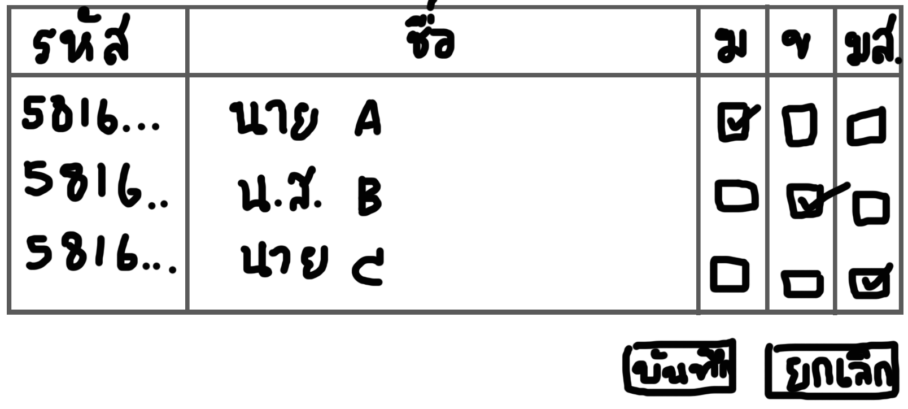
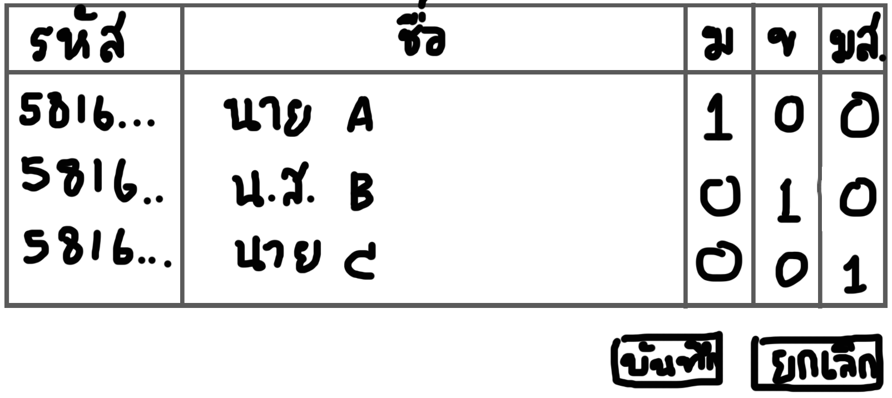

ผมชื่อ ศุภเกียรติ เกียรติกันยา ต้องการจะทำระบบสำหรับเช็คชื่อเข้าเรียนของนิสิต
เพื่อที่จะไม่ให้เกิดความวุ่นวายและเกิดการเสียเวลาในการเช็คชื่อ เช่น การเช็คชื่อโดยการส่งกระดาษให้นิสิตเขียนทีละคน อาจเกิดความวุ่นวายในการส่งกระดาษให้คนถัดไป
และวิธีนี้ยังใช้เวลามากเกินไปด้วย
เค้าโครงของระบบ

